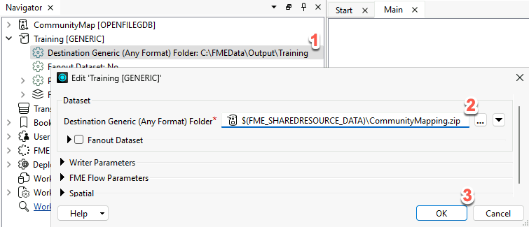
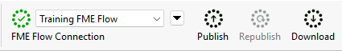
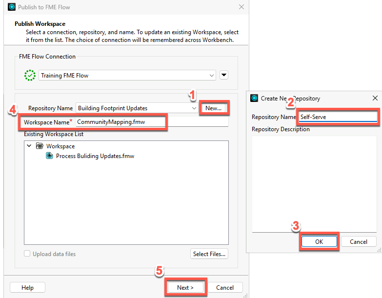
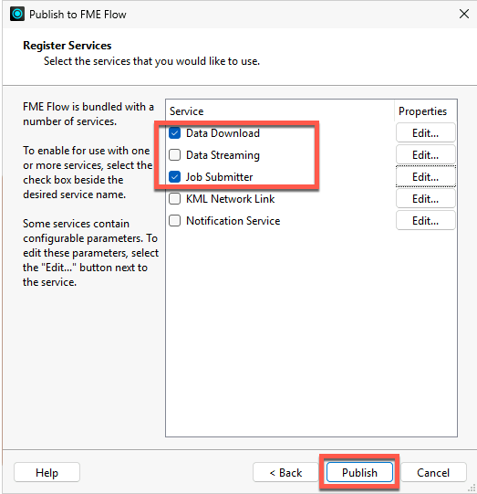
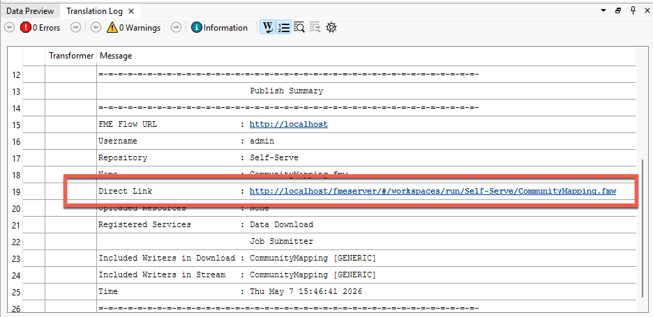
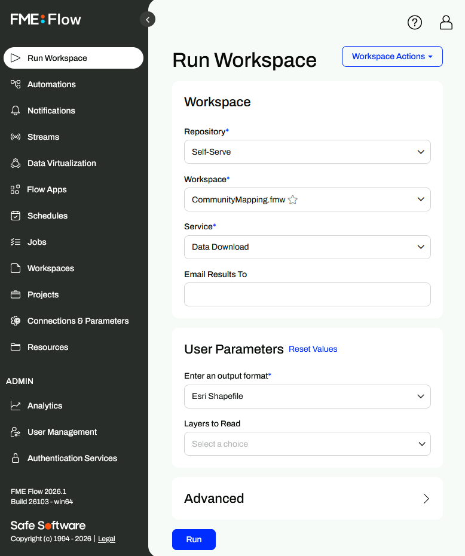

Learning Objectives
After completing this lesson, you’ll be able to:
- Connect FME Form to FME Flow using a web connection.
- Publish a workspace to the web.
- View your published workspace in FME Flow.
Instructions
In this lesson, you will:
- Scroll down to read the text below.
- Complete the exercise by following the steps.
- Complete the Quiz toward the bottom of the page.
- Optional: Let us know if you found this lesson relevant to your role by filling out the survey at the bottom of the page.
- Click 'Next' to mark the lesson complete.
Resources
- Starting workspace
- C:\FMEData\Workspaces\IntegrateDataWithTheFMEPlatform\publish-a-self-serve-workspace-to-the-web.fmw
- Complete workspace
- C:\FMEData\Workspaces\IntegrateDataWithTheFMEPlatform\publish-a-self-serve-workspace-to-the-web-complete.fmw
- CommunityMap.gdb.zip
- C:\FMEData\Data\CommunityMapping\CommunityMap.gdb
Publish a Workspace to the Web
Now that Frank has a self-serve workspace, he must publish it to FME Flow.

The rest of this course assumes you have access to an FME Flow. If you need help installing, licensing, and creating an account for FME Flow, please follow these instructions or speak to your IT department. Options for accessing FME Flow include:
- Use an instance provided by requesting an on-demand virtual machine in the footer of the FME Academy home page.
- Install FME Flow on your own machine.
- Access your organization’s FME Flow instance.
Scenario

Frank's workspace is working well. However, Jennifer notices a problem that he must address before publishing to FME Flow. She explains that Automations may require access to the output dataset. This means that the output must be written to a specific location on FME Flow.
In this exercise, you will:
- Update the output destination path to use FME Flow's shared Resources folder.
- Connect FME Workbench to FME Flow by creating a web connection.
- Publish the workspace to FME Flow using the Data Download and Job Submitter services.
- View the published workspace in FME Flow.
1) Open Starting Workspace
- Start FME Workbench (2026.1 or later).
- Open your starting workspace: C:\FMEData\Workspaces\IntegrateDataWithTheFMEPlatform\publish-a-self-serve-workspace-to-the-web.fmw.
2) Update the Output Path
The output destination is currently hardcoded to a local folder that FME Flow may not be able to access.
- In the Navigator, expand Training [Generic] > Parameters and double-click Destination Generic (Any Format) Folder.
- Notice the path is currently set to C:\FMEData\Output\Training. This path won't exist on the FME Flow server.
- Change the value to $(FME_SHAREDRESOURCE_DATA)\CommunityMapping.zip and click OK.
- This writes workspace output to FME Flow's shared Data folder, making results accessible to all FME Flow users.

3) Connect to FME Flow
If you are using a Safe virtual machine, it will already be connected to FME Flow, and the menu bar will look like this:

The "Training FME Flow" FME Flow Connection contains the credentials to connect to FME Flow. Creating a web connection securely stores your FME Flow credentials so FME Workbench can communicate with FME Flow.
If you are not using a Safe virtual machine, you will have to create your own FME Flow web connection.
- Click Deploy > Publish to FME Flow, or click on the Publish button on the toolbar.
4) Publish the Workspace to FME Flow
- Beside "Repository Name", click New and name the new repository "Self-Serve", then click OK.
- In the Workspace Name field, type "CommunityMapping.fmw".
- Click Next.

- Ensure both Data Download and Job Submitter are checked.
- Click Publish.

5) View the Published Workspace
- In the Translation Log, click the Direct Link to open your workspace in FME Flow.
- Log in if prompted.
- On Safe virtual machines, the username is
admin and the password is FMElearnings.

- Confirm your workspace appears on the Run Workspace page with your published parameters visible.

We'll run the workspace in the next lesson.
Tips & Tricks
- Be mindful of absolute paths in your published workspaces. Most authoring machines are Windows-based, but most FME Flow installations are Linux based. That means C:\ might not exist!
- FME Flow parameters like $(FME_SHAREDRESOURCE_DATA) can be found in the Text Editor interface when editing parameters. Using the Text Editor interface can reduce typos.
- FME has many useful built-in parameters similar to FME_SHAREDRESOURCE_DATA that let you access information about FME itself, such as the FME build number used to run the workspace or the location of the temporary data folder on the machine running the workspace. These parameters can be used to customize how FME runs in different environments or to create customized reporting on workspace runs.
- All file- and folder-based FME formats can be read as or written to ZIP files. This simplifies sharing data in formats like Esri Shapfile and Esri File Geodatabase.
- Remember that database and web connections save authentication information to connect to databases, web services, and APIs. FME stores them on the user’s operating system profile, separating authentication information from the workspace. You can also publish them to FME Flow to allow multiple users to share them without exposing passwords. The FME Flow web connection works the same way as other web connections.
- FME Flow services each provide a different way to interact with the workspace:
Leave Us Feedback on This Lesson